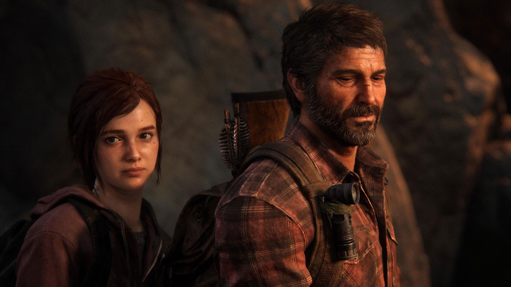
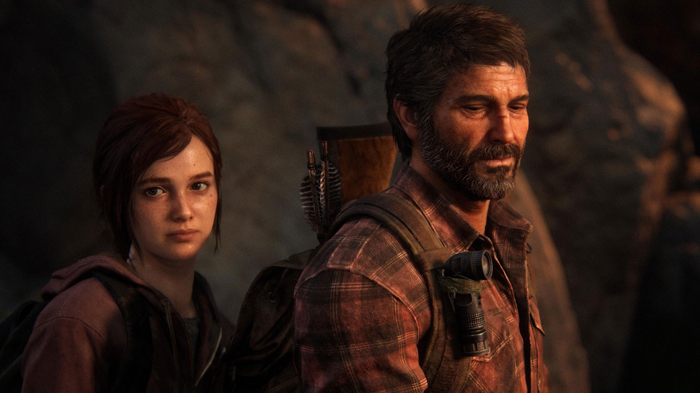
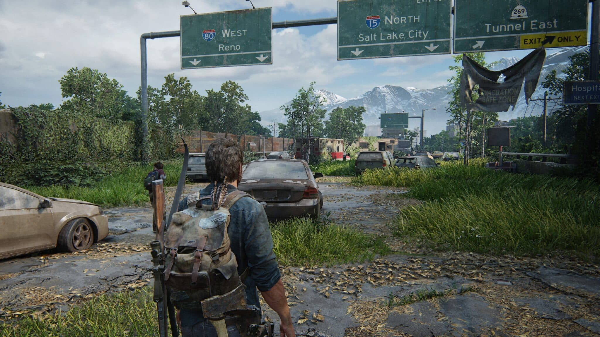
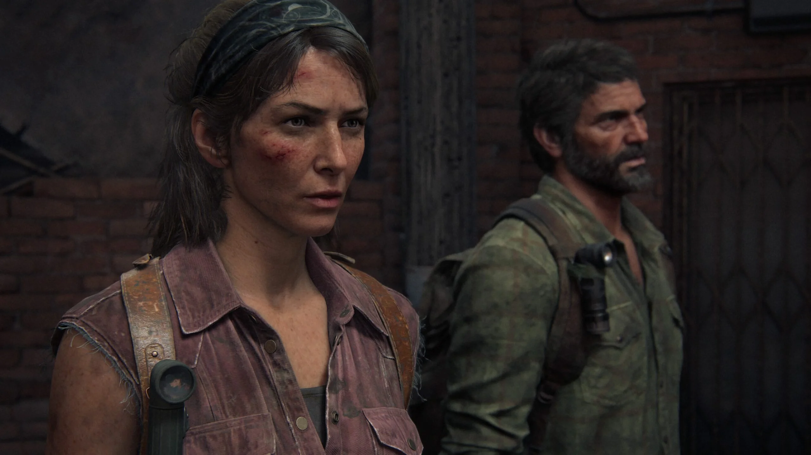
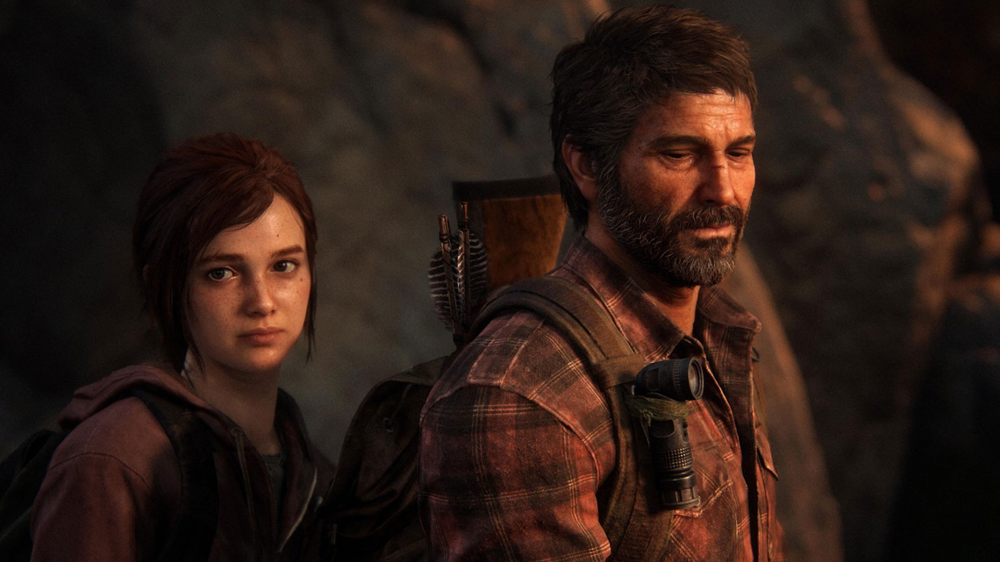

Experience the emotional storytelling and unforgettable characters in The Last of Us, winner of over 200 Game of the Year awards. In a ravaged civilisation, where infected and hardened survivors run rampant, Joel, a weary protagonist, is hired to smuggle 14-year-old Ellie out of a military quarantine zone. However, what starts as a small job soon transforms into a brutal cross-country journey. Includes the complete The Last of Us single-player story and celebrated prequel chapter, Left Behind, which explores the events that changed the lives of Ellie and her best friend Riley forever.
